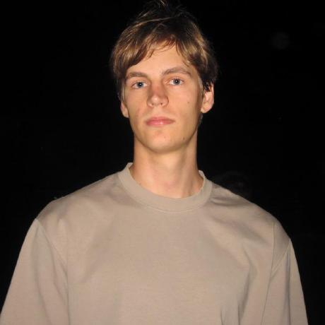

Биография и учебная деятельность
Биография

Я учусь на первом курсе направления «Программная инженерия». Мой профиль — «Инженерия сложных программных систем». Подробнее об обучении и одногруппниках — на странице моей группы.
Мне интересны Kotlin, Python и работа в Linux. В учебных проектах стараюсь разбираться не только в результате, но и в том, как устроено решение.
Навыки
-
HTML.
- Создание структуры веб-страниц.
- Использование заголовков, списков и семантических блоков.
- Работа со ссылками и изображениями.
-
Kotlin.
- Реализация учебных алгоритмов и структур данных.
- Работа над библиотекой деревьев поиска.
-
Python.
- Изучение методов поиска разладок во временных рядах.
- Учебная работа над проектом PySATL-CPD.
-
Linux и Git.
- Настройка рабочего окружения и работа в терминале.
- Использование веток и запросов на слияние.
Примеры моих интересов в программировании и Linux представлены в разделе «Программирование».
Учебные проекты
- Алгоритмы и структуры данных на Kotlin.
- Личный сайт на HTML.
- Изучение поиска разладок во временных рядах в проекте PySATL-CPD.
Поиск разладок помогает находить моменты изменения свойств данных. Репозиторий проекта PySATL-CPD откроется в новой вкладке.
Учебная команда ByteForce
В междисциплинарном проектном практикуме я работаю в команде ByteForce. Участники распределяют задачи между клиентской и серверной частями проекта.
- Лоиков Владислав
- Руководитель команды: планирование и распределение задач.
- Бирюков Егор
- Frontend-разработчик: работа над интерфейсом.
- Бабаян Артём
- Backend-разработчик: работа над серверной логикой.
С Егором, Артёмом и Максимом можно познакомиться на странице моих друзей.